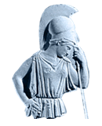

En la mitología griega, Atenea o Atena (en griego Ἀθηνά Athēná o Ἀθήνη Athḗnē; en dórico Ἀσάνα Asána) es la diosa de la sabiduría, la estrategia y la guerra justa. Es una diosa guerrera armada, y fue asociada por los etruscos con su diosa Menrva, y posteriormente por los romanos con Minerva. Atenea es atendida por una lechuza, lleva una coraza de piel de cabra llamada égida que le dio su padre Zeus y la acompaña la diosa de la victoria, Niké. Su madre fue Metis, la diosa del pensamiento astuto, aunque nació directamente de la cabeza de su padre. Atenea es también considerada una mentora de héroes. El Partenón de Atenas, en Grecia, es su templo más famoso. Según Homero, Atenea sigue en jerarquía a Zeus, de quien fue hija predilecta. Y según Platón, Atenea deriva de A-θεο-νόα (A-theo-noa) o H-θεο-νόα (E-theo-noa), que significa "la mente de Dios". (Más información)